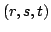
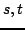
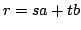
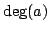
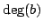

Usage
extendedLastSPRS(a,b)
Signature
extendedLastSPRS: (P,P) (P,P,P)
| Parameter | Type | Description |
|---|---|---|
| a,b | P | Two polynomials |
Description
extendedLastSPRS(a,b) returns , whereis the last non-zero remainder in the subresultant polynomial remainder sequence of a and b and  are polynomials such that . a and b both should be non-zero and  should be at least .